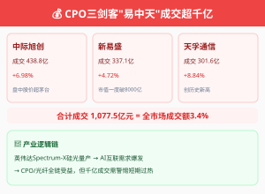

今日A股的关键词只有一个：冲高回落。
创业板指早盘气势如虹，一度涨近4%报4,185.67点——这是2025年7月以来最强盘中涨势。但午后风云突变，涨幅持续收窄，最终收报4,122.99，涨1.65%。上证指数收报4,083.97，涨0.22%；深证成指收报15,704.71，涨0.73%。科创综指表现最强，收涨2.10%报2,061.05。（来源：东方财富、每日经济新闻）
成交额方面，沪深北全天成交31,531亿元，较上日放量约3,403亿元。但绝对值掩盖了结构的极端分化——全市场仅约1,711只个股上涨，3,723只下跌。也就是说，指数涨了但超三分之二的股票在跌。这是典型的"指数失真"。
CPO（光模块）板块是今天最热的话题。 中际旭创、新易盛、天孚通信"易中天"三剑客合计成交超1,077亿元——中际旭创438.8亿、新易盛337.1亿、天孚通信301.6亿。这三只个股的成交额超过了整个教育板块总市值的数倍。板块指数涨约4.80%，盘中创历史新高，但成交额的爆发式增长本身就是一个需要警惕的信号——当一只板块的成交达到整个市场3%以上时，通常意味着拥挤交易已经接近极致。（来源：每日经济新闻、东方财富）
资金流向方面， CPO板块全天主力净流入约109.6亿元，排名板块第2（仅次于芯片的119.3亿元）。但值得注意的是，午盘时CPO主力净流入高达199.2亿元——午后有近90亿元获利了结，说明机构在借冲高减仓。光纤概念（+83.52亿元）和消费电子（+68.51亿元）同步走强，科技主线的扩散仍在继续，但速度在放缓。（来源：同花顺、东方财富）
滞涨板块方面， 培育钻石（惠丰钻石涨超17%）、煤炭开采、电力板块午后逆市拉升。白酒、银行等权重板块持续低迷。这种"科技狂欢+权重沉睡+多数股下跌"的结构，历史上往往出现在一轮行情的末期或中继阶段——方向判断取决于后续催化剂的力度。
港股方面，恒生指数跌1.56%报25,633.21点，恒生科技指数跌2.74%。 大型科技股普跌——美团跌近6%、京东跌超4%、腾讯和阿里巴巴跌超3%。南向资金净买入186.82亿港元，逆势加仓。港股走弱的核心原因：一是高盛下调H股评级（战术性降级至"低配"），二是人民币汇率承压。港股对流动性更为敏感，A股的结构性行情向港股的传递存在时滞。（来源：证券时报、智通财经、东方财富）
